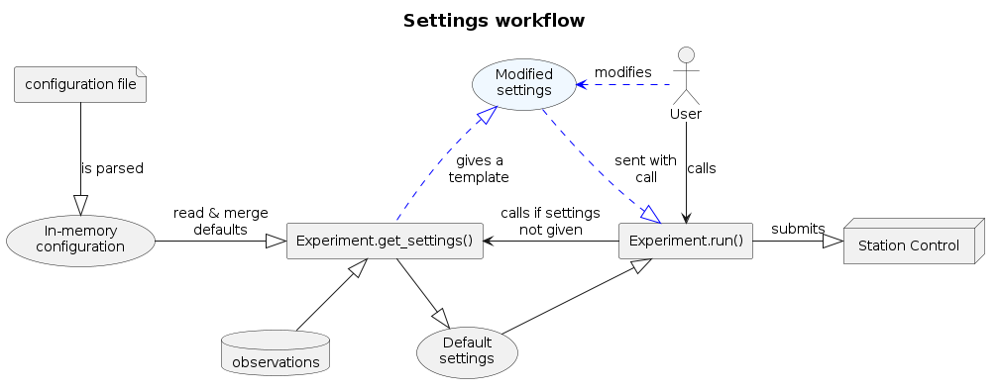

Workflow with Experiment settings#
Parameters, Settings, and SettingNodes#
The quantum computer is controlled by many instruments which typically have a large number of control knobs for different purposes. The controls between different instrument models may differ slightly in usage, but in the end provide the same functionality.
The Settings in EXA provide a way to group, change and view the huge amount of settings that need to be set to operate the instruments.
For more information, see the documentation of Parameters and Settings and
SettingNode.
Workflows with settings#
There are two possible workflows for running individual experiments. The first one relies on an assumption that a consistent set of observations has been loaded to update all settings. In this case, the user does not need to change any settings. The second workflow is getting a template for possible settings for the experiment, modifying the values in the template, and submitting the modified settings when running the experiment.
The workflows are presented in settings_workflow_figure. The arrows with large heads show the direction of Settings.


Settings workflow. The arrows with large heads show the direction of Settings.#
Note
It is important to understand that the settings returned by get_settings are only a template.
Modifying it does not immediately change anything in the physical instruments.
Moreover, it does not reflect the current status of the instruments.
Instead, it represents the user’s intent.
The settings are only applied to the instruments when submitted to Station Control.
Using the defaults#
Most Experiments can be run without modifying the instrument settings, as shown by the black arrows in settings_workflow_figure. This requires that the station and the configuration have been set up with sensible default values, and we have set observation loading rules that fetch good calibration values.
The workflow is roughly:
Define experiment-specific default values in the EXA configuration. Load the EXA configuration with
init_experiment_configuration().Set loading rules with
set_global_default_observation_loading_rules().Change experiment options, such as number of repetitions.
Run experiment without referencing settings in any way.
Note that steps 1-3 are optional. In this workflow, the experiment merges the settings from Station Control, the configuration, and observations, and sends them to Station Control behind the scenes.
Modifying the settings manually#
In a more experimental workflow, we might want to manually override the settings generated by the experiment.
After the optional steps 1-3 above, the workflow is roughly:
Get a template for settings:
my_settings = experiment.get_settings(component_to_measure)
The method returns a
SettingNodeobject that contains all the suggested settings that are needed to run the experiment. The structure and values are specific to the experiment.Make modifications to
my_settings, as explained inexa.common.data.setting_node. Typical use cases are changing an outdated value or just trying out new things. Note that this step is optional: the settings can be passed back to the experiment as is.Run experiment as
experiment.run(..., settings=my_settings)
The modified settings are passed to the experiment and later to Station Control for execution.
If the
runis called without settings, step 4 is executed behind the scenes.
Branches of the setting tree#
The settings tree has the following main branches:
controllers: These correspond to the station settings, grouped by component.
gates: Gate calibration data.
gate_definitions: Information about known gates and their implementations.
stages: Stages of the Compiler pipeline that generates the final run definition.
characterization: Other information needed by the experiment.
gate_properties: Auxiliary information about gates obtained during calibration.
model: Physical characteristics of the QPU.
other: Namespace reserved for user-defined settings.
Merging rules#
When the get_settings method of an Experiment is called, the settings are combined from many sources and merged
with certain priorities.
A source with a higher priority overrides the value from lower-priority sources.
For controller settings, the sources and their priorities are:
Station Control default settings
Defaults from EXA configuration, “settings” section
Settings common for all components
Settings specific to a component, any experiment
Settings specific to experiment, any component
Settings specific to a component, specific experiment
Settings defined by the experiment source code
Observations
Runtime overrides by user
For gate settings, they are:
Defaults from EXA configuration, “gates” section
Settings common for all loci
Settings specific to a locus
Settings defined by the experiment source code
Observations
Runtime overrides by user